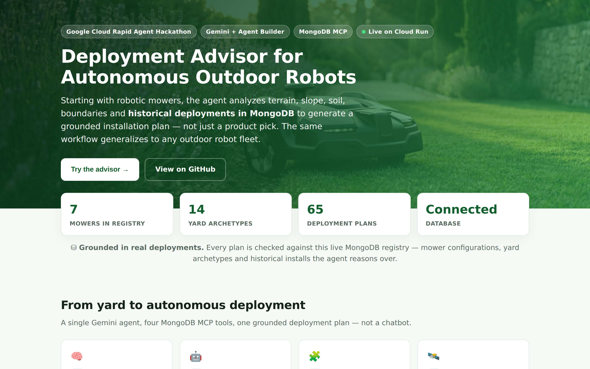
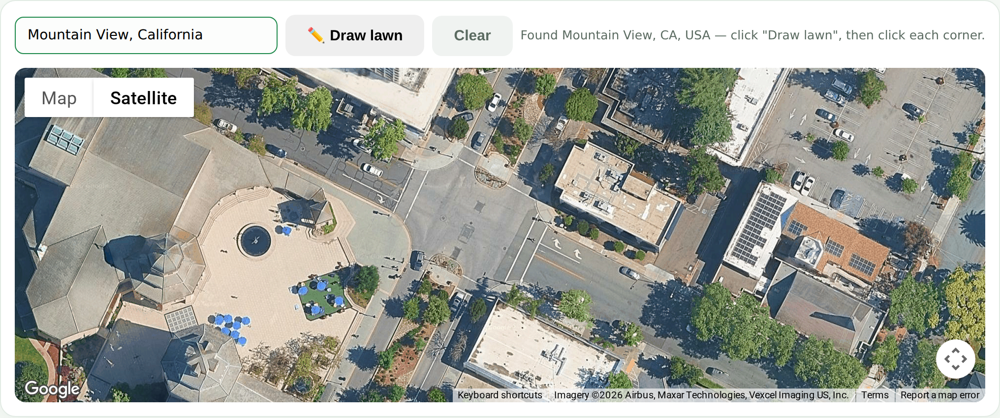

Hi Bibi 👋 — your two ideas (an auth page in front of the MongoDB user data, and an upgraded yard / map wizard) are exactly the right calls. This guide shows precisely where each one plugs into the existing app, with the real code and live screens, so you can take your mockups all the way into the product.
Everything below is from the live project — no stock art. The screenshots were captured from lawn.forenly.ai with headless Chromium, the code blocks are pasted straight out of agent/src/static/index.html, and the git session shows the real command output from an actual commit. Tooling is credited at the end.
📐 1 · Where the frontend lives
The agent is a FastAPI backend that serves a single, build-free vanilla HTML/CSS/JS file. No framework, no bundler — you edit one file and refresh.
agent/src/static/index.html ← the entire UI (407 lines: markup + CSS + JS) agent/src/static/img/ ← drop images here → served at /static/img/...
Any asset you save in img/ (e.g. auth_page.png) is immediately live at /static/img/auth_page.png.
🖥️ 2 · The current landing page (your baseline)
This is the live site today — your starting canvas. You flagged that it reads a bit like an AI prototype; this is the surface to lift.

And here is the real hero markup you'd restyle — note the class hooks (.hero, .badge, .btn-primary) you can repaint with your premium palette:
<header class="hero">
<div class="wrap">
<div class="badge-row">
<span class="badge">Google Cloud Rapid Agent Hackathon</span>
<span class="badge"><span class="live-dot"></span>Live on Cloud Run</span>
</div>
<h1>Deployment Advisor for<br>Autonomous Outdoor Robots</h1>
<p class="lede">Starting with robotic mowers, the agent analyzes terrain,
slope, soil, boundaries and historical deployments in MongoDB…</p>
<div class="cta-row">
<button class="btn btn-primary">Try the advisor →</button>
<a class="btn btn-ghost" href="https://github.com/Forenly/gcp">View on GitHub</a>
</div>
</div>
</header>
— real excerpt, agent/src/static/index.html (lines 119–134)
🗺️ 3 · Your idea #1 — the yard / map wizard
You spotted the atlas/globe and improved it. Good instinct: the map is the screen users spend the most time on, so it's the highest-impact one to land. Here's the wizard on the live site right now:

Under the hood it's plain Google Maps: you draw a polygon and we compute the area. This is the exact code you'd build your wizard UI around:
function startDraw(){ clearDraw(); drawing = true; poly = new google.maps.Polygon({ map, paths:[[]], fillColor:'#34b56a', fillOpacity:.28, strokeColor:'#13602f', strokeWeight:2, editable:true }); poly.getPath().addListener('insert_at', syncPolygon); } function syncPolygon(){ const path = poly.getPath(); const area = google.maps.geometry.spherical.computeArea(path); // m² $('area').value = Math.round(area); }— real excerpt (trimmed), agent/src/static/index.html (lines 371–402)
Google's classic Drawing Library is deprecated (removed May 2026). We already avoid it with manual polygons (above), so we're safe. If you want a richer "draw your yard" UX, the clean modern path is TerraDraw — one drawing API that keeps Google satellite tiles. Sketch:
// optional upgrade — keeps Google satellite, modern drawing API import { TerraDraw, TerraDrawPolygonMode } from "terra-draw"; import { TerraDrawGoogleMapsAdapter } from "terra-draw-google-maps-adapter"; const draw = new TerraDraw({ adapter: new TerraDrawGoogleMapsAdapter({ map, lib }), modes: [new TerraDrawPolygonMode()], }); draw.start(); // area: import area from "@turf/area"; area(feature) → m²
Not required for the hackathon — the current manual-polygon code works. This is just the direction if we want to invest in the wizard later.
🔐 4 · Your idea #2 — the authentication page
Your reasoning is spot on: the moment real user + yard records live in MongoDB, they need a login boundary. For the FastAPI + MongoDB stack, the cleanest fit is fastapi-users with the Beanie (MongoDB) adapter — it gives register / login / JWT out of the box, so the backend matches your auth-page mockup:
# MongoDB stores user data → put a login boundary in front of it from fastapi_users import FastAPIUsers from fastapi_users.authentication import ( JWTStrategy, BearerTransport, AuthenticationBackend) class User(BeanieBaseUser): # persisted in MongoDB pass bearer = BearerTransport(tokenUrl="auth/jwt/login") backend = AuthenticationBackend( name="jwt", transport=bearer, get_strategy=lambda: JWTStrategy(secret=SECRET, lifetime_seconds=3600)) # app.include_router(users.get_auth_router(backend), prefix="/auth/jwt")
Your job stays on the frontend: build the login / sign-up screen in index.html (or a new login.html) that POSTs to /auth/jwt/login. We can wire the backend route in parallel so nothing blocks you.
🚀 5 · Hot-reload locally, then open a PR
From the project root — it serves the files with Uvicorn + file-watch reload:
./dev.sh
Open http://localhost:8000, save index.html, refresh — your changes appear instantly.
And yes — you're absolutely allowed to edit the code 🙂. Just work on a branch and open a PR so we review together. This is the real command output from doing exactly that:
# 1) create your feature branch $ git checkout -b feature/bibi-ui-mockups Switched to a new branch 'feature/bibi-ui-mockups' # 2) see what changed, then stage + commit $ git status -s M agent/src/static/index.html ?? agent/src/static/img/ $ git add agent/src/static $ git commit -m "feat(ui): add auth page + map wizard mockups" [feature/bibi-ui-mockups e916201] feat(ui): add auth page + map wizard mockups 2 files changed, 2 insertions(+), 1 deletion(-) # 3) push the branch and open a PR on GitHub $ git push origin feature/bibi-ui-mockups $ git log --oneline -2 e916201 feat(ui): add auth page + map wizard mockups 7e76980 baseline
Then on GitHub, click “Compare & pull request” on your branch — tag me as reviewer and we ship it. 🚀
🧰 How each part of this guide was made
So you can reproduce or remix it — only tools we actually ran are credited:
For richer lessons next, the modern toolchain we'd reach for: CodeHike — scrollytelling code walkthroughs VHS — reproducible terminal GIFs Motion Canvas — animated explainers Slidev — dev slide decks Screen Studio / Tella — auto-zoom screencasts Scribe — auto step-by-step guides